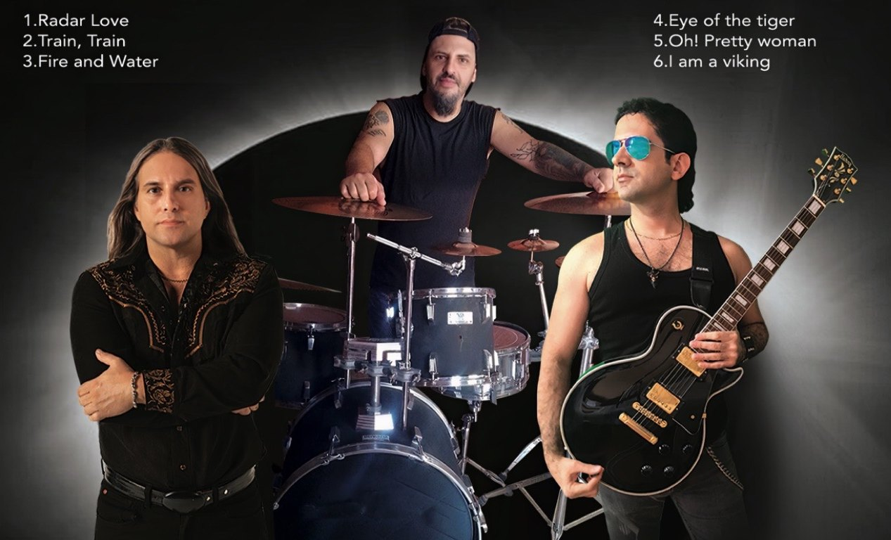

How it was made
A home-studio project with friends around the world
Sacred Wind started as a project rather than a band. During the pandemic, Danny Veras began recording at home and learning to mix and produce. Musicians joined from wherever they were, sending parts back and forth until the songs came together.
Nobody did it to get famous. We did it to make an album together and learn the craft of recording along the way. Drummers, bass players and keyboard players came and went, and Tribute is what we have to show for it.
USASpainArgentinaTurkeyRussiaBrazilItalyGermanyCanada
